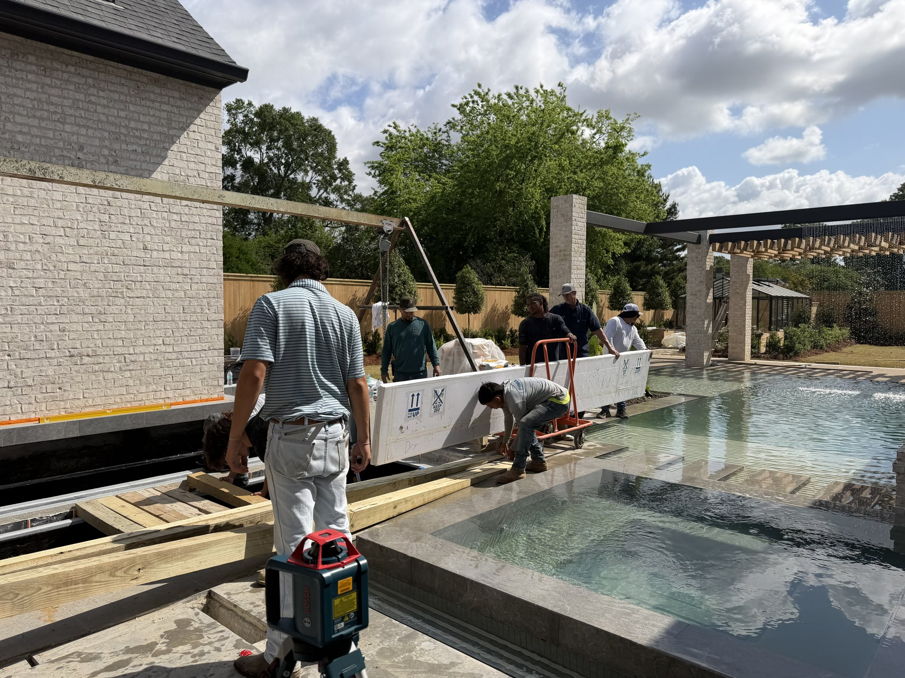

Engineered for the Extraordinary
Structural acrylic for luxury pools, aquariums, zoos, and architectural builds. Full scope, US-fabricated, founder-led.
Led by Bart Baker, 30 years in structural acrylic- {{s.h}}
- {{s.sub}}
- {{d.t}}{{d.d}}
The Experience Behind SAS
Bart Baker brings more than 30 years of structural acrylic experience to every SAS project. Before founding SAS, he spent 26 years leading global operations at one of the world's largest structural acrylic manufacturers, and five years as President of a US acrylic company he built from the ground up.
- 26 yrsLeading global operations at a world-leading acrylic manufacturer
- 5 yrsPresident of a US acrylic company he built from the ground up
- SASTodayFounder of SAS, overseeing every project personally
The most experienced person on your project is the person who owns it.
Luxury Residential Pool
Full-scope panel installation. Engineering, fabrication, installation, waterproofing. One team, start to finish.
What We Build
From engineering input to post-install inspection. SAS handles the complete scope.
Industries We Serve

Ready to Discuss Your Project?
Whether you are pricing a pool panel, planning an aquarium installation, or need engineering input early in the design phase, this is the right conversation to have before the scope gets complicated.
Discuss Your Project Or call Bart directly: [(XXX) XXX-XXXX]Frequently Asked Questions
{{f.a}}